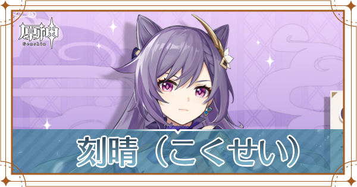

目次
基本情報

-------------------------------------------------------------------------------
| HP | 攻撃力 | 防御力 | |
|---|---|---|---|
| Lv.80突破時 | 12182 | 300 | 743 |
| Lv.90 | 13103 | 323 | 799 |
| HP | 攻撃力 | 防御力 | |
|---|---|---|---|
| Lv.80突破時 | 12182 | 300 | 743 |
| Lv.90 | 13103 | 323 | 799 |